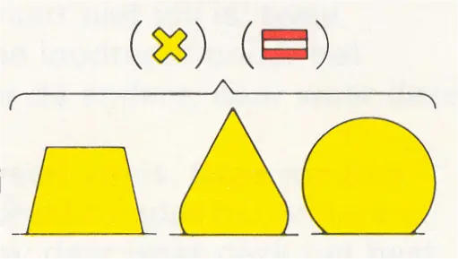
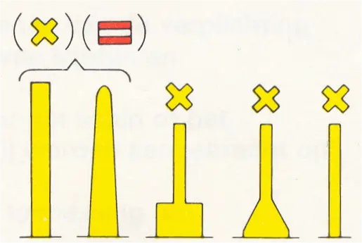
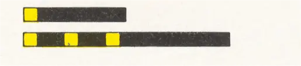
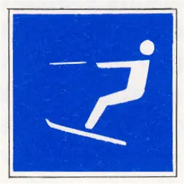

4 BIJZONDERE MARKERING
Deze markering is niet in de eerste plaats bestemd voor de navigatie, maar duidt een bepaald gebied of voorwerp aan, dat doorgaans is omschreven in nautische of andere daarvoor bestemde publicaties. Deze betonning wordt bijvoorbeeld toegepast ter markering van verboden gebieden, bagger-, stort- en ankerplaatsen, oefen- en visserijgebieden, voor het afbakenen van speciale gebieden zoals voor snelle motorboten, waterskiërs, zeilplanken, wedstrijden, e.d. en voor het aangeven van posities met een speciaal doel zoals kabels, instrumenten, etc.
Opmerking
De bijzondere betonning moet door de doorgaande scheepvaart, d.w.z. schepen die niet een aldus gemarkeerd gebied als bestemming hebben, aan dezelfde zijde worden gehouden als de "gewone" betonning.
vorm: | stompe, spitse of bolvormige boei, ton, sparboei, drijf- of kopbaken. |  |
kleur: | geel | |
topteken:1 | geel liggend kruis of, alleen in geval van een verboden gebied het verbodsteken A.1 (bijlage 5) in de vorm van een cilinder |  |
licht:1 | geel schitterlicht of groepschitterlicht, uitgezonderd het groepschitterlicht bestaande uit 2 schitteringen |  |
kenteken:1 | de aanduiding - of een afkorting daarvan - van het doel waarvoor de markering is gelegd, of een pictogram (teken van bijlage 5 onder A en E) dat de betekenis van het gebied aangeeft. | b.v. Gas b.v.  |